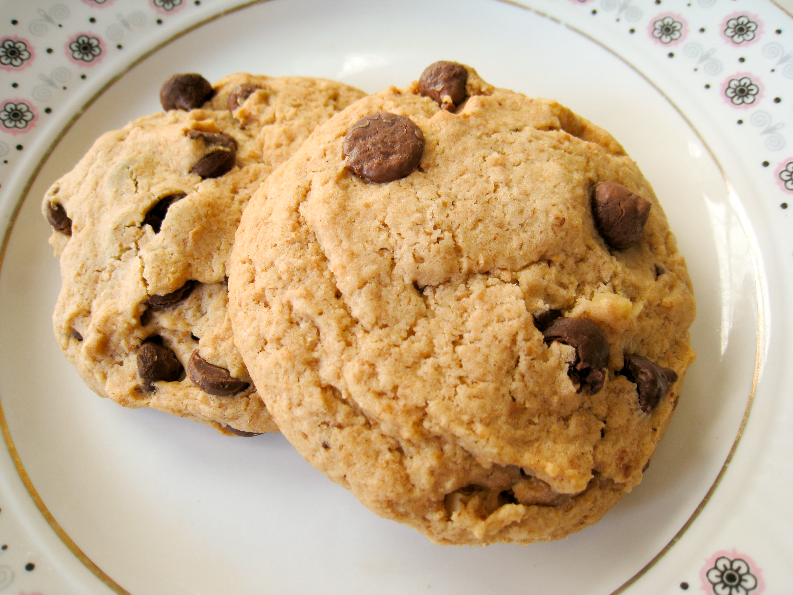

first, if you want to make holiday cookies, or a different cookie type, click the links above. If not, then you need to grab a big bowl and your ingredients

Preheat oven to 375 degrees F, Line baking sheets with parchment paper.
In your big bowl, mix your dry ingredients, which are flour, baking soda, baking powder and salt
Next in a separate bowl, cream your butter and sugar
Add eggs and vanilla extract into your butter-sugar mixture, and mix until full combined
Add the dry ingredients into the other mixture and mix until they are fully combined
If you want your chocolate chip cookies to be even more cool and different,click this link Cookie types If you want regular chocolate chip cookies, then, stir in your chocolate chips until they are evenly mixed in.
roll the dough into balls and let them chill in the fridge for 20 minutes
put them in the oven for 10-12 mintues, and let them cool for a bit and then you are done!
Karen Arnold, https://www.publicdomainpictures.net/en/view-image.php?image=36406&picture=pink-polka-dot-background, Creative commons